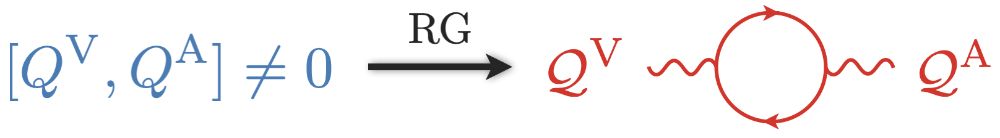
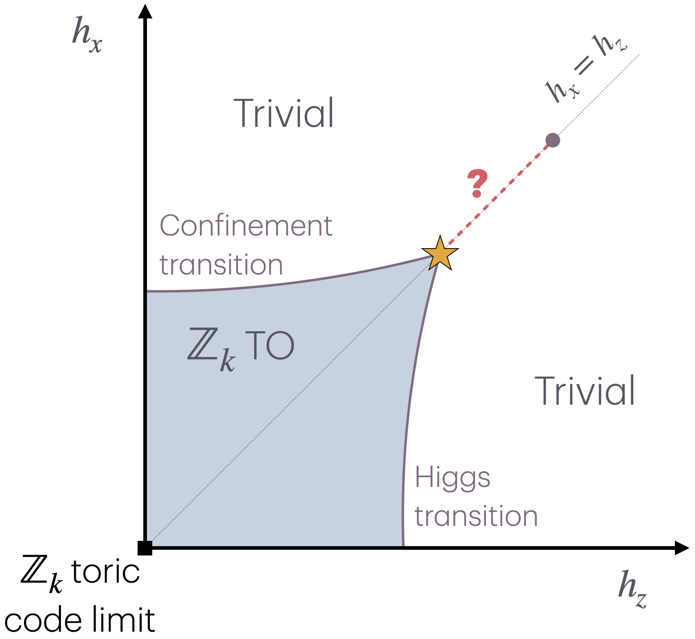
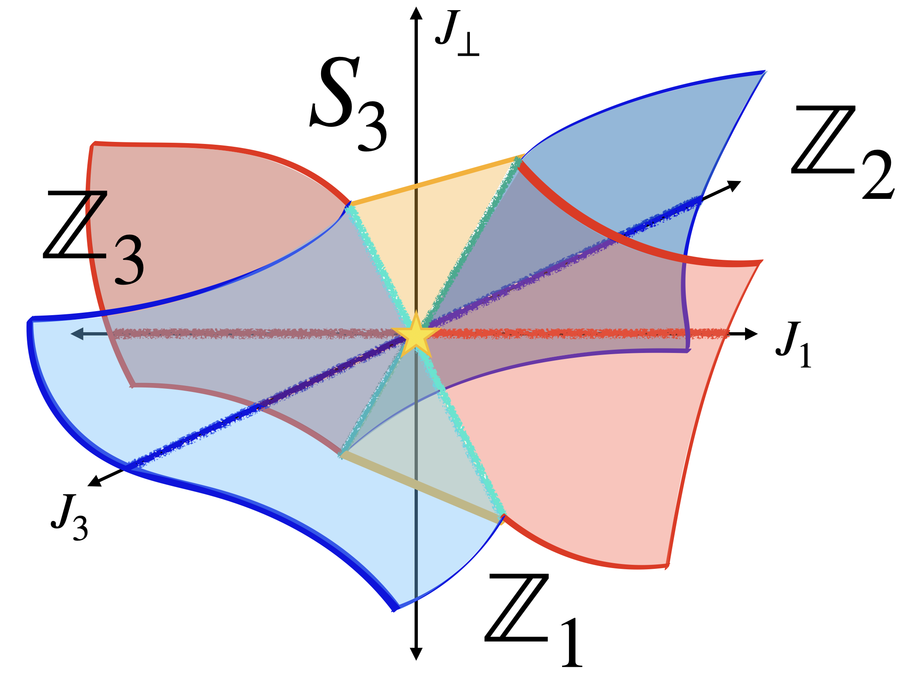
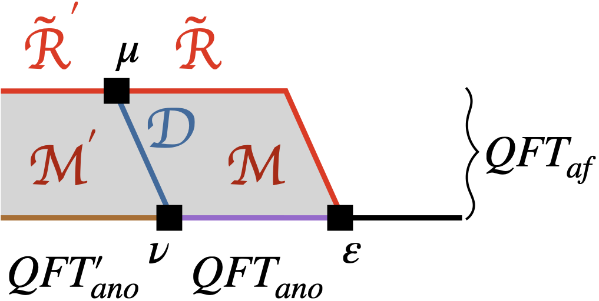
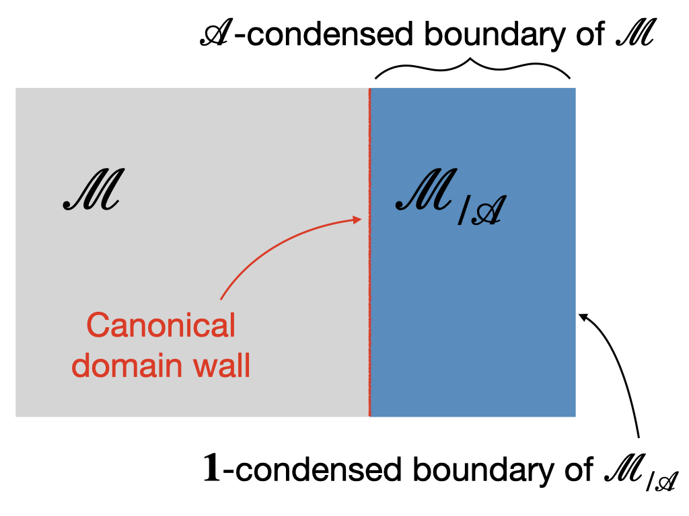
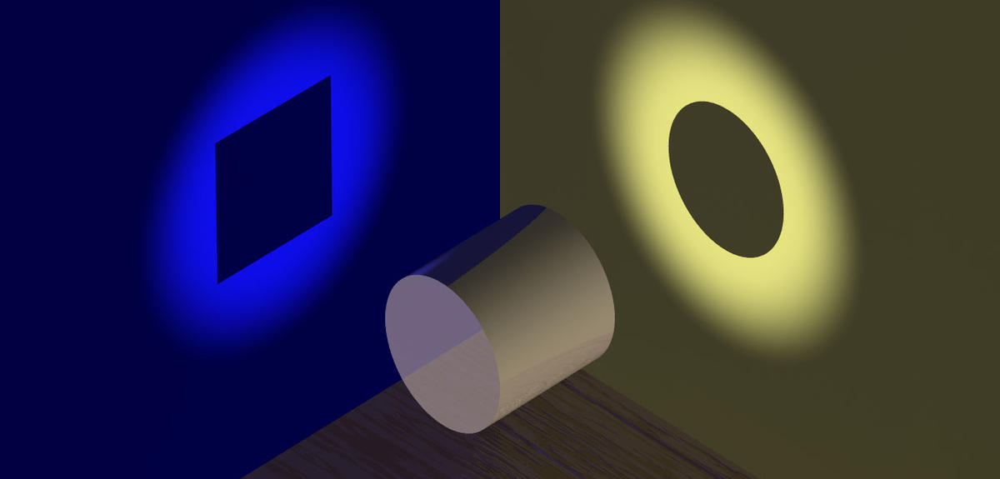
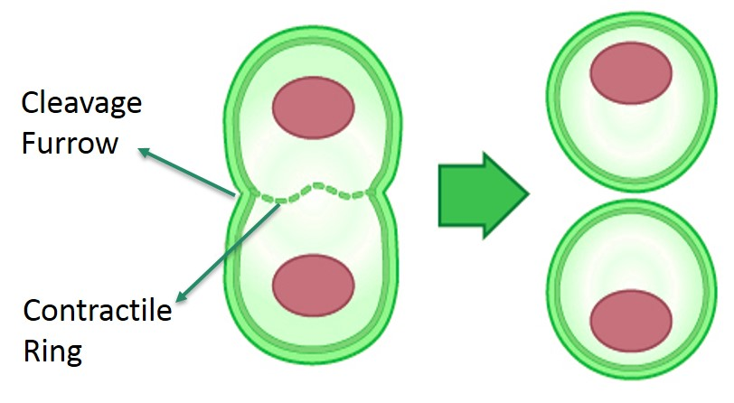

PhD Candidate
Physics Department
Massachusetts Institute of Technology (MIT)
I am a final-year graduate student in the Department of Physics at the Massachusetts Institute of Technology (MIT), working in the area of condensed matter theory supervised by Professor Xiao-Gang Wen. I was an undergraduate at the Indian Institute of Technology (IIT) Bombay where I earned a major in Physics and a minor in Mathematics. My current research is aimed at developing theoretical tools that provide insights into the organizing principles behind the rich emergent phenomena realized in quantum many-body systems. In the process, I have used concepts from topology and category theory for various physics questions. I also maintain a general interest in applications of statistical physics in studying emergent phenomena in complex systems more broadly. In the past, I have explored this interest in topics such as cellular growth, self-organized collective motion, dynamics of internet memes, etc. Outside of work, I enjoy cooking, reading, listening to (and playing) music, and learning languages.
Non-technical summary of research interests:
Quantum many-body physics explores emergent phenomena in vast collections of particles, like electrons, which interact according to laws of quantum mechanics. Just as water molecules can exist in different phases – solid and liquid – at different temperatures, electrons can also form different “quantum phases” based on external conditions such as pressure and electromagnetic fields. These phases – examples of which are superconductors, magnets, semiconductors – exhibit unique and often unexpected properties, motivating the search for new materials. My research aims to develop a framework for organizing quantum phases and their transitions. This not only deepens the understanding of how interactions bind quantum particles in organized structures, but also lays the groundwork for future technological innovations. My PhD research toward this goal is informed by “generalized symmetry” – a concept much-studied in the wider theoretical physics community in recent years. In ongoing and future work, I want to continue developing the machinery of generalized symmetry, while also leveraging this perspective in the study of open quantum systems. Collaborations with mathematics, high-energy physics, and quantum information science will continue to be an exciting feature of this interdisciplinary research.
In the 1+1D ultra-local lattice Hamiltonian for staggered fermions with a finite-dimensional Hilbert space, there are two conserved, integer-valued charges that flow in the continuum limit to the vector and axial charges of a massless Dirac fermion with a perturbative anomaly. Each of the two lattice charges generates an ordinary U(1) global symmetry that acts locally on operators and can be gauged individually. Interestingly, they do not commute on a finite lattice and generate the Onsager algebra, but their commutator goes to zero in the continuum limit. The chiral anomaly is matched by this non-abelian algebra, which is consistent with the Nielsen-Ninomiya theorem. We further prove that the presence of these two conserved lattice charges forces the low-energy phase to be gapless, reminiscent of the consequence from perturbative anomalies of continuous global symmetries in continuum field theory. Upon bosonization, these two charges lead to two exact U(1) symmetries in the XY model that flow to the momentum and winding symmetries in the free boson conformal field theory.

A. Chatterjee, S.D. Pace, and S.-H. Shao, "Quantized axial charge of staggered fermions and the chiral anomaly", arXiv preprint arXiv:2409.12220. [Preprint]
We study the putative multicritical point in 2+1D Zk gauge theory where the Higgs and confinement transitions meet. The presence of an e-m duality symmetry at this critical point forces anyons with nontrivial braiding to close their gaps simultaneously, giving rise to a critical theory that mixes strong interactions with mutual statistics. An effective U(1)×U(1) gauge theory with a mutual Chern-Simons term at level k is proposed to describe the vicinity of the multicritical point for k≥4. We argue analytically that monopoles are irrelevant in the IR CFT and compute the scaling dimensions of the leading duality-symmetric/anti-symmetric operators. In the large k limit, these scaling dimensions approach 3 – 1/νXY as 1/k2, where νXY is the correlation length exponent of the 3D XY model.

Z.D. Shi and A. Chatterjee, "Analytic framework for self-dual criticality in Zk gauge theory with matter", arXiv preprint arXiv:2407.07941. [Preprint]
Generalized symmetries often appear in the form of emergent symmetries in low energy effective descriptions of quantum many-body systems. Non-invertible symmetries are a particularly exotic class of generalized symmetries, in that they are implemented by transformations that do not form a group. Such symmetries appear in large families of gapless states of quantum matter and constrain their low-energy dynamics. To provide a UV-complete description of such symmetries, it is useful to construct lattice models that respect these symmetries exactly. In this paper, we discuss two families of one-dimensional lattice Hamiltonians with finite on-site Hilbert spaces: one with (invertible) S3 symmetry and the other with non-invertible Rep(S3) symmetry. Our models are largely analytically tractable and demonstrate all possible spontaneous symmetry breaking patterns of these symmetries. Moreover, we use numerical techniques to study the nature of continuous phase transitions between the different symmetry-breaking gapped phases associated with both symmetries. Both models have self-dual lines, where the models are enriched by so-called intrinsically non-invertible symmetries generated by Kramers-Wannier-like duality transformations. We provide explicit lattice operators that generate these non-invertible self-duality symmetries. We give a SymTO-based classification of self-dual gapped and gapless phases in both models.

A. Chatterjee, Ö.M. Aksoy, and X.-G. Wen, "Quantum phases and transitions in spin chains with non-invertible symmetries", arXiv preprint arXiv:2405.05331. [Journal, Preprint]
A characteristic property of a gapless liquid state is its emergent symmetry and dual symmetry, associated with the conservation laws of symmetry charges and symmetry defects respectively. These conservation laws, considered on an equal footing, can't be described simply by the representation theory of a group (or a higher group). They are best described in terms of a topological order (TO) with gappable boundary in one higher dimension; we call this the symTO of the gapless state. The symTO can thus be considered a fingerprint of the gapless state. We propose that a largely complete characterization of a gapless state, up to local-low-energy equivalence, can be obtained in terms of its maximal emergent symTO. In this paper, we review the symmetry/topological-order (Sym/TO) correspondence and propose a precise definition of maximal symTO. We discuss various examples to illustrate these ideas. We find that the 1+1D Ising critical point has a maximal symTO described by the 2+1D double-Ising topological order. We provide a derivation of this result using symmetry twists in an exactly solvable model of the Ising critical point. The critical point in the 3-state Potts model has a maximal symTO of double (6,5)-minimal-model topological order. As an example of a noninvertible symmetry in 1+1D, we study the possible gapless states of a Fibonacci anyon chain with emergent double-Fibonacci symTO. We find the Fibonacci-anyon chain without translation symmetry has a critical point with unbroken double-Fibonacci symTO. In fact, such a critical theory has a maximal symTO of double (5,4)-minimal-model topological order. We argue that, in the presence of translation symmetry, the above critical point becomes a stable gapless phase with no symmetric relevant operator.

A. Chatterjee, W. Ji and X.-G. Wen, "Emergent generalized symmetry and maximal symmetry-topological-order", arXiv preprint arXiv:2212.14432. [Preprint]
Two global symmetries are holo-equivalent if their algebras of local symmetric operators are isomorphic. A holo-equivalent class of global symmetries is described by a gappable-boundary topological orders (TO) in one higher dimension (called symmetry TO), which leads to a symmetry/topological-order (Symm/TO) correspondence. We establish that:

Symmetry is usually defined via transformations described by a (higher) group. But a symmetry really corresponds to an algebra of local symmetric operators, which directly constrains the properties of the system. In this paper, we point out that the algebra of local symmetric operators contains a special class of extended operators -- transparent patch operators, which reveal the selection sectors and hence the corresponding symmetry. The algebra of those transparent patch operators in n-dimensional space gives rise to a non-degenerate braided fusion n-category, which happens to describe a topological order in one higher dimension (for finite symmetry). Such a holographic theory not only describes (higher) symmetries, it also describes anomalous (higher) symmetries, non-invertible (higher) symmetries (also known as algebraic higher symmetries), and non-invertible gravitational anomalies. Thus, topological order in one higher dimension, replacing group, provides a unified and systematic description of the above generalized symmetries. This is referred to symmetry/topological-order (Symm/TO) correspondence. Our approach also leads to a derivation of topological holographic principle: \emph{boundary uniquely determines the bulk}, or more precisely, the algebra of local boundary operators uniquely determines the bulk topological order. As an application of the Symm/TO correspondence, we show the equivalence between Z2×Z2 symmetry with mixed anomaly and Z4 symmetry, as well as between many other symmetries, in 1-dimensional space.

A. Chatterjee and X.-G. Wen, "Symmetry as a shadow of topological order and a derivation of topological holographic principle", Physical Review B 107.15 (2023): 155136. [Journal, Preprint]
Liquid crystals, which are ubiquitous today in the form of Liquid Crystal Displays (LCDs), have the fascinating property of simultaneously showing fluidity and long-range order. One of the classes of liquid crystals is the class of nematics. The dynamics of nematics can be described by a theory due to Pierre-Giles de Gennes (Nobel Prize in Physics, 1991). A nonequilibrium extension to this liquid crystal framework goes by the name of active gel theory. In this project, we studied the dynamics of cytokinetic ring closure, a phenomenon that is responsible for dividing the cytoplasm of a parent cell into two daughter cells. Using an active gel framework, we worked out the quasi-static dynamics of the ring closure phenomenon, and quantified the stability of the process by analyzing angular perturbation modes. We were able to identify specific mechanisms for the well-documented slow-down of the ring contraction at late times. Experiments was also found that the closure of the cytokinetic ring often starts out in a non-circular/asymmetric manner but becomes more circular as it contracts. Consistent with this observation, we found that some of the angular deformation modes are unstable at a large ring radius but all of them become stable at small values of the ring radius.

M. Chatterjee, A. Chatterjee, A. Nandi, A. Sain, “Dynamics and Stability of the Contractile Actomyosin Ring in the Cell”, Physical Review Letters, 128(6), 068102. [Journal, Preprint]
In Summer 2018, supported by the DAAD-WISE fellowship, I did a research internship in the condensed matter theory group at JGU Mainz. My project involved developing a theoretical model to improve on existing Active Brownian Particle (ABP)-based models for the phenomenon of motility-induced phase separation (MIPS). We were able to qualitatively explain the deviation of experiments from the previous ABP models, using a constant-affiinity ensemble approach. I also worked on the problem of sedimentation in active ideal gases and was able to predict a first-order correction to the previous theoretical estimates of the sedimentation length in such systems.
A. Fischer, A. Chatterjee, and T. Speck, "Aggregation and sedimentation of active Brownian particles at constant affinity", The Journal of chemical physics, 150(6), p.064910. [Journal, Preprint]
Please feel free to contact me at: achatt AT mit DOT edu